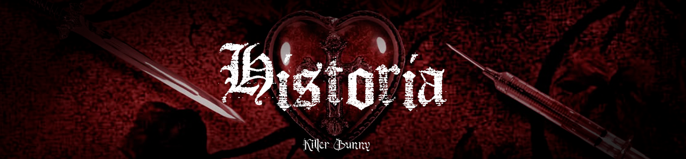
Historia
Las raíces de la cultura emo se encuentran en el famoso “hardcore punk”, pero más específicamente del “emotional hardcore” (siendo de la abreviación de “emotional” en inglés, cuyo significado es “emocional”, de donde deriva el nombre de la subcultura). Este género musical surgió como una alternativa al sonido agresivo y violento del punk tradicional, priorizando la intensidad emocional, la vulnerabilidad y las letras introspectivas. Pero… ¿y de dónde comienzan de verdad los emos? Para ello, debemos saber que la cultura emo tiene tres etapas definidas: cuando se separa del hardcore y construye su propia identidad, cuando se consolida esta misma y, la tercera pero más controvertida, la concepción que formamos del emo dosmilero.
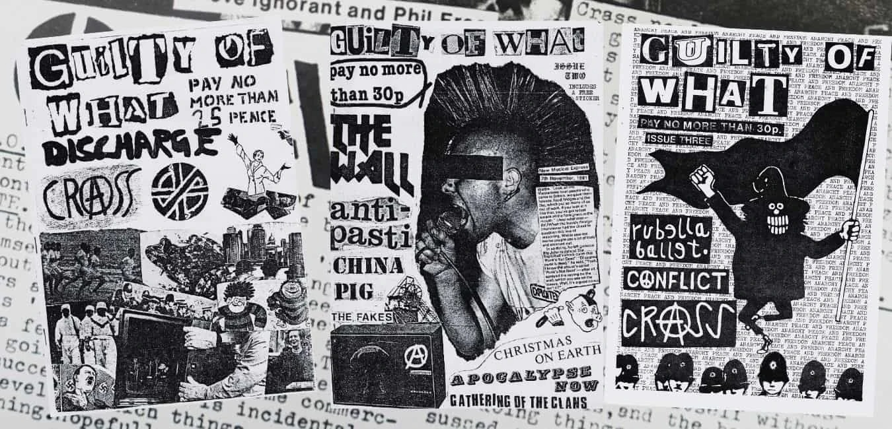
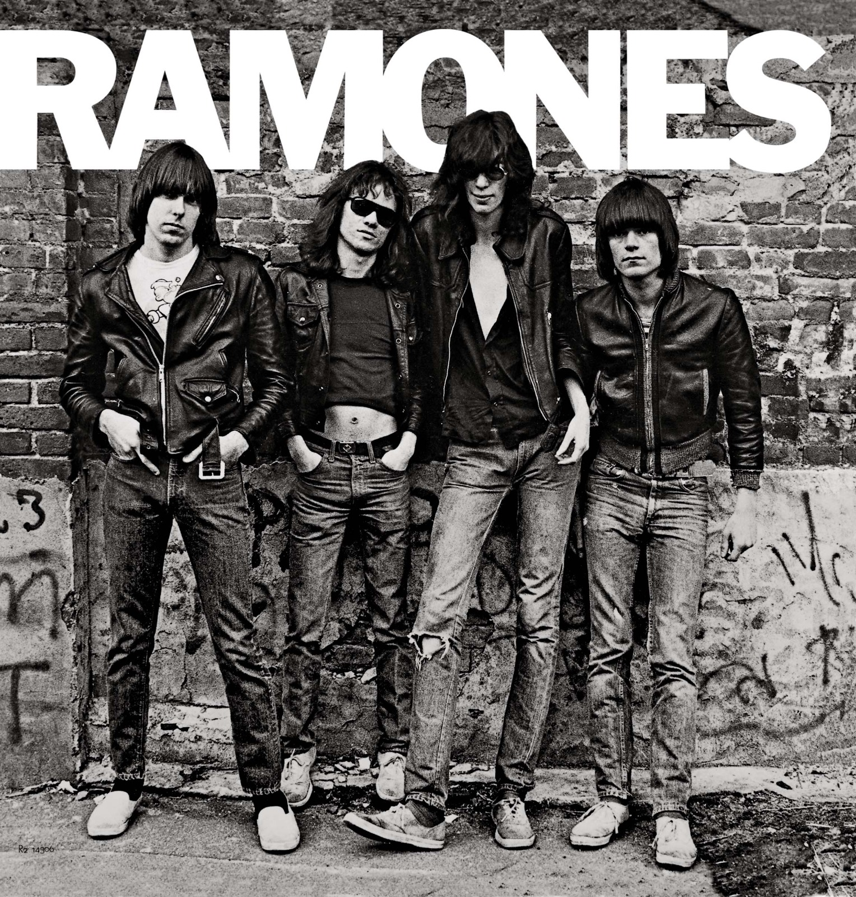
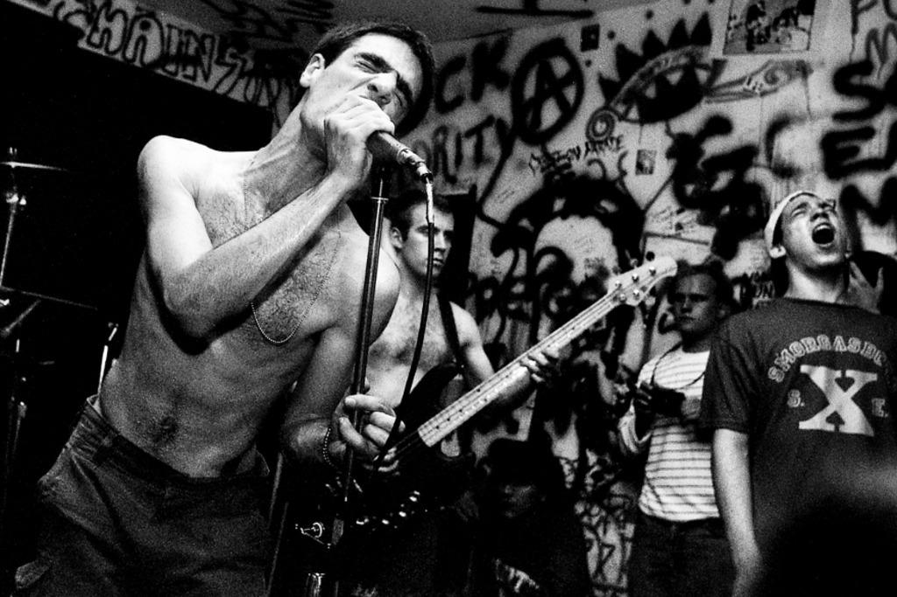
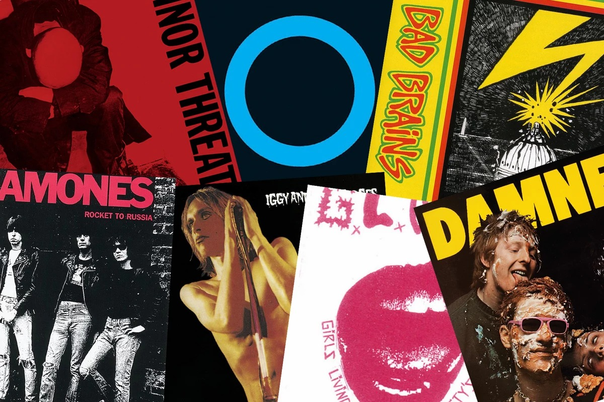
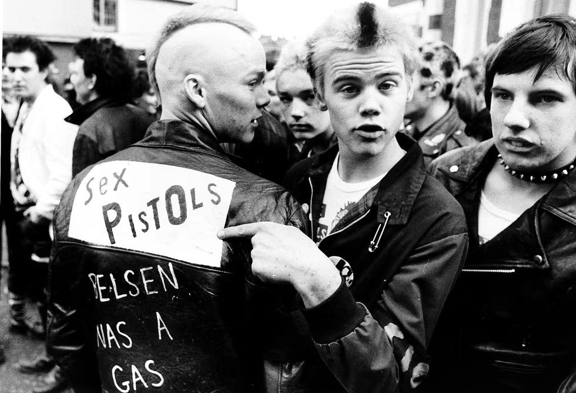
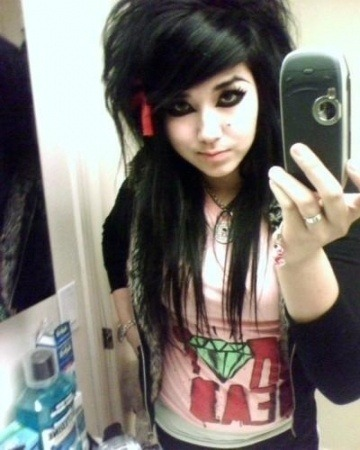
Orígenes
El origen más remoto del emo nace directamente del punk, un género que explotó durante los años 70 y que cambió para siempre la manera de entender la música y la rebeldía. Aunque bandas estadounidenses como Ramones, MC5 o The Stooges fueron influencias inevitables, y lugares como el CBGB de Nueva York funcionaron como verdaderos templos culturales, el punk terminó encontrando su explosión definitiva en Gran Bretaña. Ahí dejó de ser solamente música para convertirse en una postura frente al mundo. Pero el punk original nunca fue únicamente “anarquía” o caos vacío, como muchas veces se simplifica. Su raíz estaba profundamente conectada con ideas como el situacionismo de Guy Debord, una corriente crítica que rechazaba tanto el capitalismo como los modelos burocráticos y autoritarios. Era una generación que sentía que el hiperconsumo, la televisión y la llamada “sociedad del espectáculo” los estaba alejando de cualquier sentido real de identidad. Jóvenes sin patria, sin Dios y sin representación empezaban a sentirse atrapados dentro de una sociedad cada vez más artificial y mecanizada. Como respuesta a eso apareció la filosofía del DIY (Do It Yourself o “Hazlo tú mismo”), una idea basada en la autogestión, la independencia artística y la democratización de la música. La lógica era simple: crear sin depender de las grandes discográficas ni de estructuras comerciales que terminaran vaciando el mensaje. Dentro de todo ese ecosistema terminaría naciendo el hardcore punk en Estados Unidos. Mucho más agresivo, visceral y políticamente cargado que el punk original, el hardcore funcionaba como una descarga de rabia contra todo lo que estaba ocurriendo en la sociedad estadounidense de la época. La figura de Ronald Reagan, el presidente de aquel momento, se convirtió prácticamente en el símbolo de todo aquello que estas bandas rechazaban. La “Reaganomía” —recortes de impuestos para las clases altas, militarización extrema, políticas represivas y apoyo a dictaduras— alimentó el enojo de grupos pioneros como Bad Brains, Middle Class o Chromags. Sin embargo, con el paso del tiempo, la escena hardcore empezó a transformarse en un espacio cada vez más violento, hipermasculinizado y contaminado por sectores supremacistas. Frente a eso, algunas bandas decidieron tomar distancia. No querían abandonar la intensidad ni el compromiso emocional, pero sí dejar atrás la lógica del “tipo duro” y la agresividad vacía. La idea ya no era únicamente escupir rabia política, sino convertir las emociones personales en el centro del discurso. Así fue como nació el Emotional Hardcore.
Consolidación
El punto de quiebre definitivo para la identidad emo llegó con el Revolution Summer en Washington D.C., un movimiento que terminaría consolidando el emocore como algo completamente distinto dentro de la música alternativa. Una de las figuras centrales de este momento fue Ian MacKaye, integrante de bandas fundamentales como Minor Threat y Fugazi, además de fundador del sello Dischord Records. Durante esta etapa empezó a romperse uno de los códigos más rígidos de la música extrema: la idea de la masculinidad invulnerable. Las bandas comenzaron a hablar abiertamente de alienación, angustia adolescente, romanticismo, frustración y melancolía. Musicalmente, el sonido seguía conservando la energía del hardcore, pero se volvía mucho más melódico y emocional. Aun así, seguían presentes ciertas influencias ideológicas del hardcore tradicional, como el Straight Edge —el rechazo al alcohol, las drogas y la promiscuidad— e incluso el vegetarianismo en algunos casos. Ya en los años 90, el emo entró en una especie de “era dorada de capitalización”, algo bastante parecido a lo que ocurrió con el grunge. Bandas como Sunny Day Real Estate, respaldadas por sellos como Sub Pop, ayudaron a legitimar y expandir el género mucho más allá de los círculos underground. Finalmente, en 1997, el lanzamiento del recopilatorio The Emo Diaries por Deep Elm Records terminó oficializando el término “emo” como un paraguas enorme que agrupaba distintos sonidos nacidos desde el hardcore. A partir de ahí comenzaron a surgir múltiples ramas dentro del género. Por un lado apareció el Midwest Emo y el Math Rock, caracterizados por afinaciones poco convencionales, estructuras complejas, cambios de ritmo constantes y técnicas como el tapping, que le daban un aire mucho más técnico y emocional al sonido. Por otro lado surgió el Emoviolence, una variante muchísimo más extrema que mezclaba la sensibilidad del emo y el screamo con la violencia caótica del Power Violence. Bandas como Heroin, Honeywell o Inhumanity fueron pioneras de este estilo: canciones cortas, ruidosas, agresivas y cargadas de letras nihilistas o directamente misantrópicas. En este contexto, ser emo no significaba simplemente “estar triste”. Significaba convivir con emociones consideradas socialmente negativas —agonía, ansiedad, melancolía, desesperación— y convertirlas en algo artístico. La voz desgarrada, el raspy voice y los gritos emocionales funcionaban como una manera de transmitir introspección y vulnerabilidad sin caer en la ira ciega del hardcore más puro.
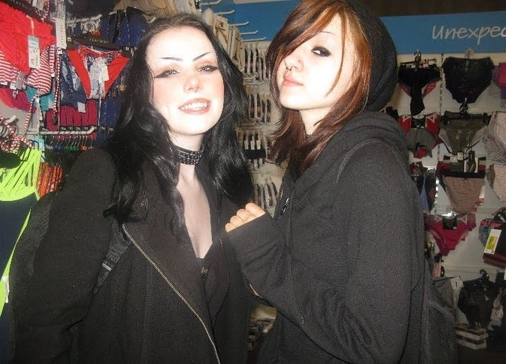
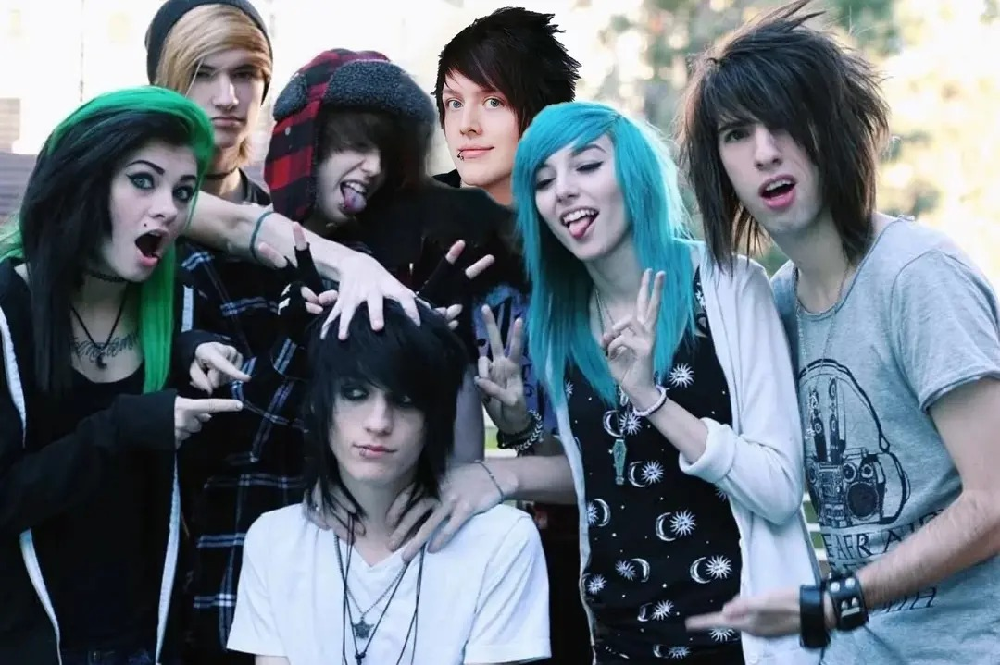
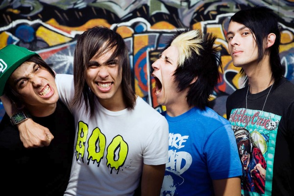
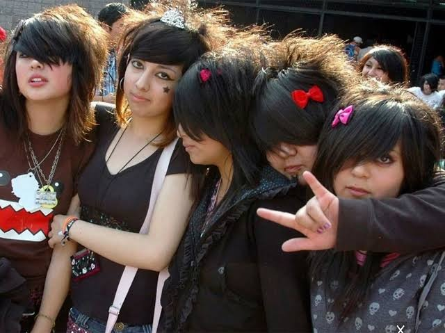
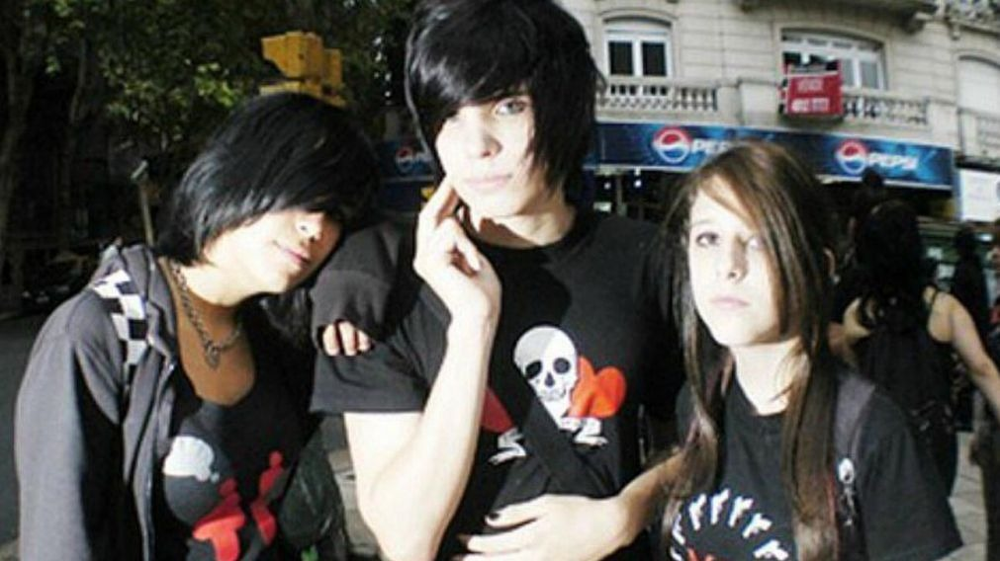
¿Emos en Argentina?
La cultura emo llegó a Argentina principalmente gracias a Internet, los canales musicales y las redes sociales que empezaban a crecer durante los primeros años de los 2000. MTV Latinoamérica transmitía constantemente videoclips de bandas emo y pop punk, haciendo que miles de adolescentes descubrieran esa música casi por accidente. Pero el factor más importante fue, sin dudas, el crecimiento de Internet y especialmente de Fotolog. Argentina terminó siendo uno de los países donde Fotolog tuvo mayor impacto. Miles de jóvenes utilizaban la plataforma para subir fotos, compartir peinados, mostrar ropa y conectar con otras personas que escuchaban las mismas bandas. Los cibercafés también jugaron un papel enorme en toda esta expansión cultural. Muchísimos adolescentes pasaban horas navegando por redes sociales, descargando música o participando en comunidades relacionadas con distintas tribus urbanas. Entre 2005 y 2008 el movimiento emo alcanzó su punto máximo en Argentina. En ciudades como Buenos Aires, Rosario o Córdoba empezaron a verse grupos de jóvenes usando ropa oscura, flequillos largos y remeras de bandas internacionales. La estética se volvió completamente reconocible. Aunque como fenómeno masivo duró relativamente poco, el emo dejó varias marcas importantes dentro de la cultura juvenil argentina. Una de las más fuertes fue la normalización de expresar emociones entre adolescentes. Los emos hablaban abiertamente de tristeza, angustia, problemas personales y sentimientos, algo que chocaba bastante con ciertos modelos tradicionales de masculinidad donde mostrar vulnerabilidad era visto como algo negativo. La estética emo también terminó influyendo en estilos posteriores. La ropa ajustada, los peinados alternativos y los accesorios oscuros empezaron a aparecer incluso fuera del ambiente emo. Además, la popularidad de bandas emo ayudó a expandir mucho más el rock alternativo y el pop punk dentro de Argentina, inspirando a distintas bandas locales a incorporar sonidos y estéticas similares. Otra de las grandes huellas del movimiento fue la manera en que esta generación construyó identidad a través de Internet. Plataformas como Fotolog permitieron crear comunidades digitales donde los adolescentes compartían música, fotos, pensamientos personales y experiencias emocionales. En muchos sentidos, eso marcó el inicio de nuevas formas de interacción online entre jóvenes. Los emos convivieron además con otras tribus urbanas muy populares de la época, especialmente los floggers. Mientras los emos estaban ligados a la melancolía, el rock alternativo y cierta introspección emocional, los floggers se asociaban más con la música electrónica, los colores llamativos y la búsqueda de popularidad dentro de Fotolog. En varios casos llegaron a existir rivalidades alimentadas por prejuicios, memes y estereotipos difundidos tanto por medios de comunicación como por Internet. Con el tiempo, especialmente cerca de 2010, la popularidad masiva del emo empezó a desaparecer. Nuevas redes sociales, nuevas modas y nuevas tendencias musicales fueron reemplazando lentamente a las tribus urbanas tradicionales. Aun así, la influencia emo jamás desapareció del todo. Todavía hoy pueden encontrarse elementos de esa cultura en la música, la moda y las redes sociales actuales. Incluso en plataformas modernas como TikTok o Instagram siguen existiendo comunidades enteras inspiradas en la estética, la sensibilidad y el imaginario emo de los años 2000.
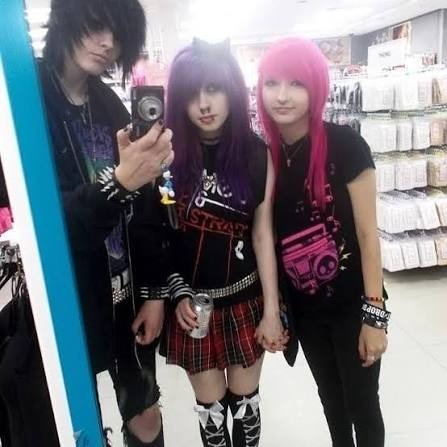
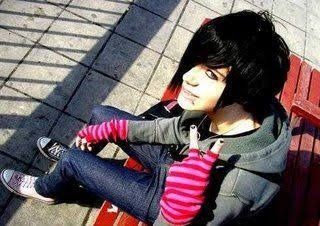
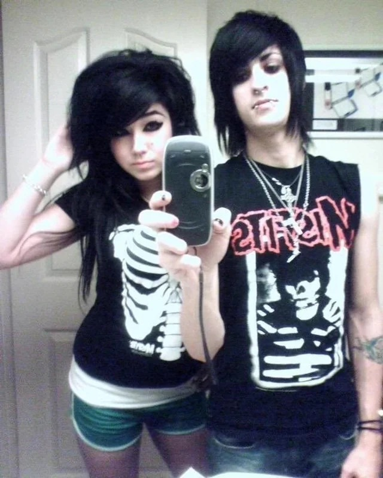
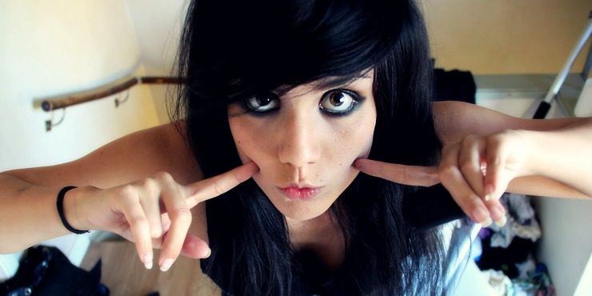
Concepción del emo
La imagen que hoy se tiene del emo, especialmente la asociada a la estética de los años 2000, es considerada por muchas personas como una versión comercializada y descafeinada del movimiento original. Mientras los primeros exponentes del emotional hardcore usaban ropa gastada, de segunda mano y reutilizada por necesidad y convicción, el emo del 2000 terminó absorbiendo elementos visuales del punk y el gótico comprados directamente en tiendas comerciales como Hot Topic o Claire’s. Según muchas interpretaciones, este cambio estuvo relacionado con una pérdida progresiva de conciencia de clase en las nuevas generaciones. Dentro de una sociedad marcada por el hiperconsumo y la sensación de “falso bienestar”, muchas estéticas empezaron a vaciarse de contenido político o social para convertirse simplemente en identidades rápidas de consumir y descartar. El emo dejó de ser únicamente una respuesta visceral frente a la alienación para transformarse, muchas veces, en una performance constante de tristeza dentro de plataformas como MySpace o Fotolog. Escuchar bandas como My Chemical Romance o Panic! At The Disco ya no siempre respondía a una identificación profunda con el mensaje, sino también a una especie de rol estético que había que cumplir dentro de Internet. Aun así, hoy siguen coexistiendo dos visiones distintas del emo. Está la concepción estética de los 2000, mucho más enfocada en la moda, la imagen y el impacto visual. Aunque también sigue existiendo el emo entendido como un paraguas musical heredero directo del emotional hardcore, donde bandas como Title Fight, Tigers Jaw o Super Heaven mantienen viva esa conexión basada más en la energía, la honestidad emocional y la pasión que en la estética superficial. En última instancia, el emo sobrevive porque funciona como una forma de abrazar las propias debilidades y transformar emociones difíciles en algo compartible. La música se convierte en un refugio para hablar de temas pesados que normalmente serían imposibles de expresar de otra manera. Y para muchísimas personas, especialmente durante etapas de angustia adolescente o crisis personales, el emo no fue solo música: fue literalmente una herramienta para seguir adelante.
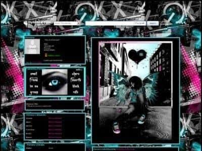
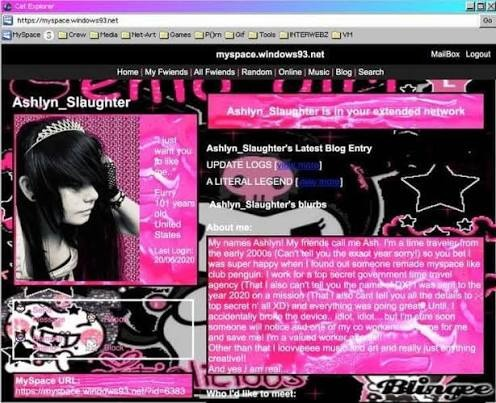
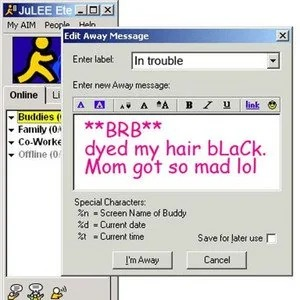
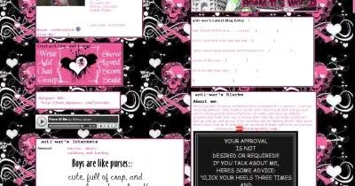
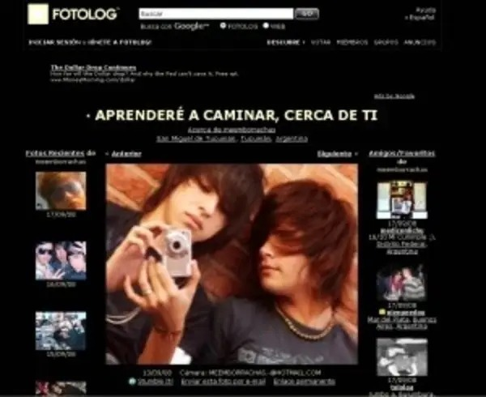
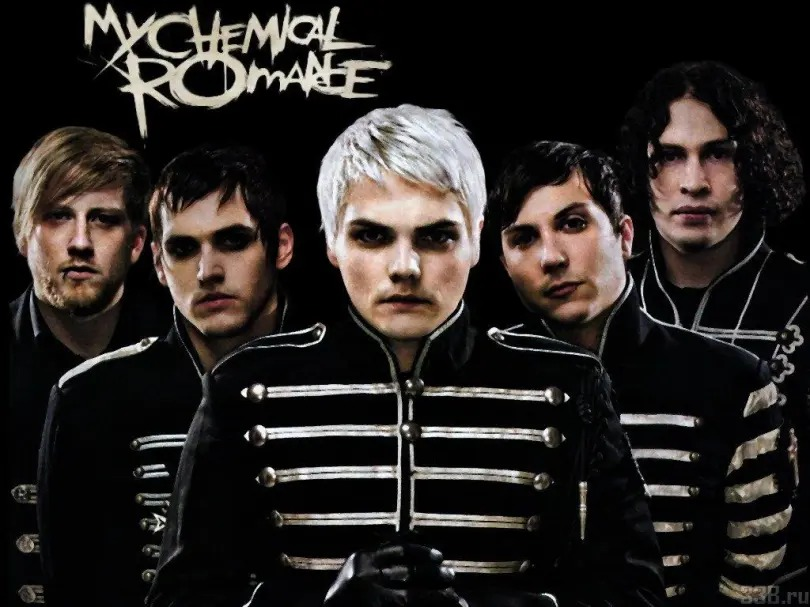
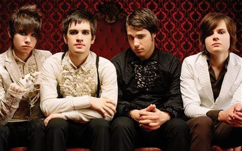